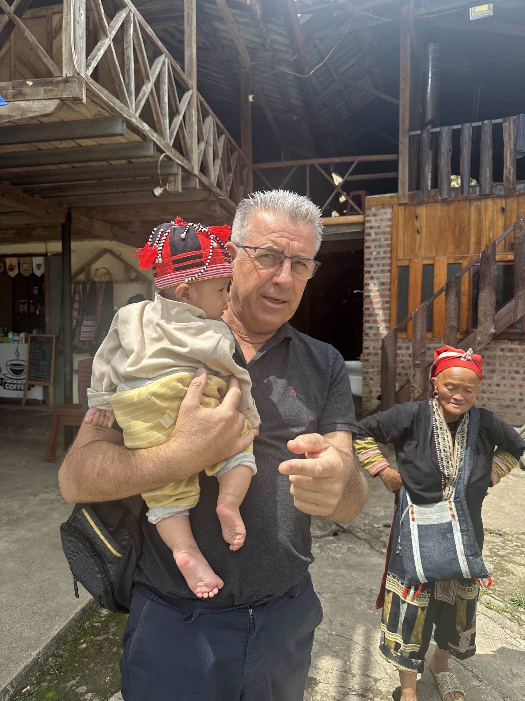
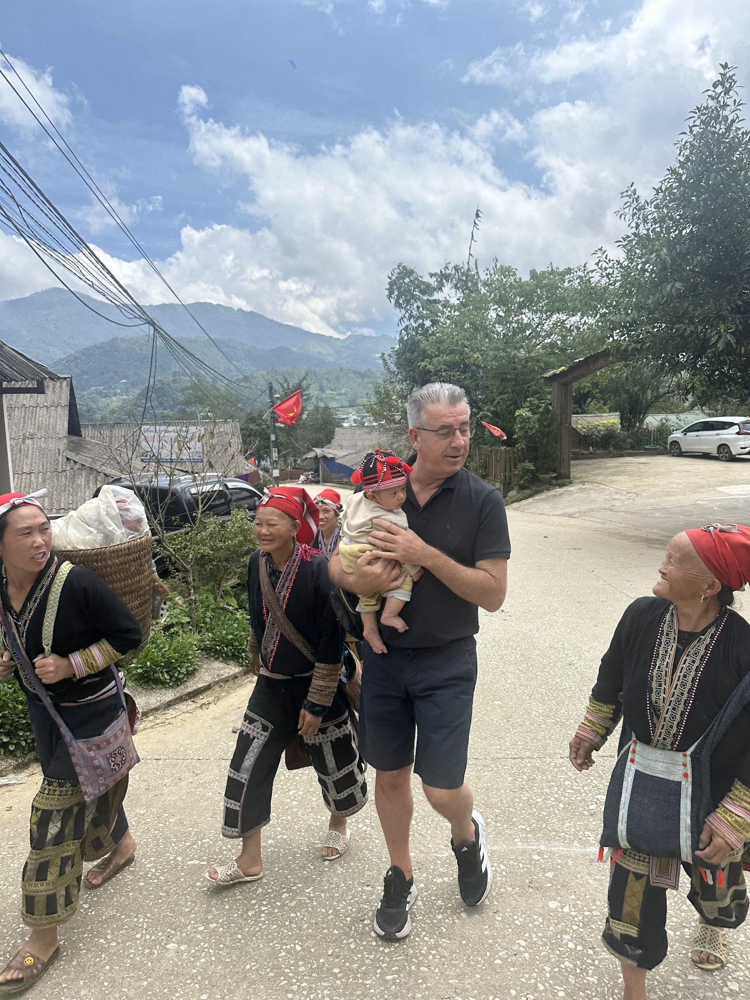

From a career in business to a mission for children across Southeast Asia.
Christophe Goisset, a retired businessman from Bordeaux, France, founded Entraide Asia to put his savings and his time to work for children who simply want to stay in school.

Christophe Goisset during a visit to a partner community in northern Vietnam.
A retirement spent giving back
After a long career in business, Christophe Goisset retired with a simple idea: rather than let his savings sit idle, he wanted to put them to direct use for children who needed it most. A visit to Maison Chance, a school and shelter for children with disabilities in Ho Chi Minh City, turned that idea into a plan. He founded Entraide Asia in early 2025 to fund what the school needed most — safer classrooms, accessibility ramps, and the everyday supplies that keep a child coming back the next day.
What began as support for a single school in Vietnam has since grown into partnerships across four countries — Vietnam, Cambodia, Thailand and Myanmar — still run the same way Christophe started it: modestly, transparently, and with the people closest to each child making the decisions.
Money and time, given directly
Much of what Entraide Asia funds is unglamorous by design. At Bayon School near Siem Reap, Cambodia, his contributions cover tuition, books and daily living costs for students who would otherwise have to choose between class and helping their families get by — the same is true for the students he sponsors individually in Myanmar. At Maison Chance in Vietnam, his funding paid for renovated classrooms and new accessibility ramps, along with the basic supplies and repairs that keep a small school running day to day. In Thailand, he supports vocational and life-skills training at Living Grace, always channelled through the local teachers and staff who know each community best.
Christophe also travels to see the programs firsthand — visiting classrooms, meeting teachers and families, and checking that support is reaching the children who need it, rather than simply funding from a distance.

Regular field visits, not just funding from a distance, are central to how Christophe works.
A quiet, hands-on approach
Christophe insists on quarterly independent audits for every program the foundation funds, publishing the results rather than keeping them internal. It's a habit from his business career, he says — trust has to be earned and checked, not simply assumed.
Today, Entraide Asia funds three partner schools and a growing number of individually sponsored students across Vietnam, Cambodia, Thailand and Myanmar. Christophe remains closely involved in the day-to-day work, reviewing outcomes with local partners rather than stepping back once the funding is in place.
"I spent my career building a business. I'd rather spend my retirement making sure a child in Vietnam or Cambodia doesn't have to choose between school and everything else their family needs."